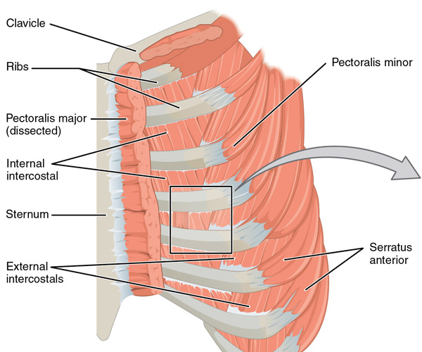

Breath Is Everything...
Remeber to keep your Posture when attempting proper breath control.
The voice is best described as a wind instrument, because breathing is 80% of singing and proper singing begins and ends with proper breathing. Time to familiarize yourself with proper breathing techniques! You use your intercostal muscles to control your breath support for singing. Remember, it is important to breath through an open mouth, not your nose, when singing.
- If you try breathing from your chest, you will find you won't have enough support for higher notes. Your support must come from deeper breaths.
- Try starting off by taking yoga breaths. Although your inhaling through your nostrils, you are engaging the intercostal muscles and training your body to take in deeper breaths, rather than shallow ones.
- The best way to access your intercostal muscles is by panting like a dog. Try putting your hands on the sides of your waist, sticking your tongue out-wide mouth, and panting in and out forcibly. Your hands will feel the proper muscles engaging and if you pant enough you will feel specific muscles (intercostal) tire themselves out.

Try a few deep pants, about five sets, when first starting out. Remember, these are muscles you want to feel expanding and contracting while singing! Any other type of muscle tension in general is a no-no!
When you are able to engage your intercostal muscles more actively and have a general awareness of them, try inhaling for several counts, holding your breath for several counts, and exhaling for several counts. Try starting with a 4 count inhale, 4 count breath hold, and 7 count exhale. Such exercises will increase your stamina and breath-control.